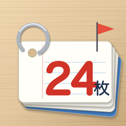

逆算の単語カード
試験の日から逆算して、きょうめくる枚数を出す単語カード。
自分で作る、リングでとじた単語カードです。束に「試験の日」と「何回まわすか」を入れると、試験の前の日までに終わるように、きょうめくる枚数を出します。
- 逆算：残り（リングの札 × 目標の回数 − まわった分）を、試験の前の日までの日数で割って、「残り 74枚 ÷ 使える日 9日 ＝ きょう 9枚」のように式のまま見せます
- 休んだ日の分は、残りの日に自動で振り分け直します。この7日のペースでは目標の回数に届かないときは、赤い字で「このままだと 1.8回 しかまわせません」と知らせます
- めくる：たたくと裏返り、「わかった」か「まだ」。「まだ」の札は3枚あとにもう一度出ます
- 覚えた札は「リングから外す」と、数に入らなくなります
- 札は1枚ずつでも、「表：裏」の行をまとめて貼り付けても足せます。途中で閉じても続きから
- 登録・課金はありません。めくっている間に、画面いっぱいの広告は出ません（画面のいちばん下の小さな広告だけです）